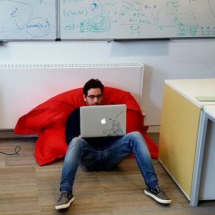

<div id="portrait">
 
</div>
<div id="social">						 	
	<span>
			  <a href="mailto:davidpaule@acm.org?Subject=Hello%20David">
				  <i class="fa fa-envelope fa-2x fa-fw nouline"></i>
			  </a>
			  <a href="skype:jorgedavidpaule?userinfo">
				  <i class="fab fa-skype fa-2x fa-fw nouline"></i>
			  </a>
			  <a href="https://www.twitter.com/salias" target="_blank">
				  <i class="fab fa-twitter fa-2x fa-fw nouline"></i>
			  </a>
			  <a href="https://github.com/Salias" target="_blank">
				  <i class="fab fa-github-alt fa-2x fa-fw nouline"></i>
			  </a>
			  <a href="https://www.linkedin.com/in/davidpaule/" target="_blank">
				  <i class="fab fa-linkedin fa-2x fa-fw nouline"></i>
			  </a>
			  <a href="https://scholar.google.co.uk/citations?user=p5Lr9ZEAAAAJ&hl=en" target="_blank">
				  <i class="fas fa-graduation-cap fa-2x fa-fw nouline"></i>
			  </a>
	</span>
	<!-- <p style="margin-top: 40px; margin-left: -32px;">
		<a class="twitter-timeline" data-width="300" data-height="400" data-dnt="true" href="https://twitter.com/salias?ref_src=twsrc%5Etfw">Tweets by salias</a> <script async src="https://platform.twitter.com/widgets.js" charset="utf-8"></script>
	</p> -->
</div>